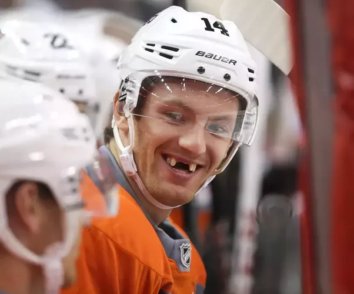

Vancouver Cucks Hockey Team
BTW I always knew that Ian MacIntyre was a huge fag. Anyway on to the article.
Sportsnet:
TDC_ARTICLE_START
Growing up in British Columbia’s West Kootenays, in Castlegar, Travis Green said there wasn’t a lot of discussion in his house about racism or social justice.
His dad, Doug, worked for BC Tel. His mom, Linda, looked after Travis and his brother, David, before getting administrative jobs with the Chamber of Commerce and Selkirk College.
“My dad had to get a second job selling Electrolux vacuum cleaners door-to-door to support me and my brother to play hockey,” Green said. “My parents just raised us to be, just, good people. My parents were honest, good people that worked hard.”
Green has some honest, good people in the Vancouver Canucks dressing room, too.
The Canucks coach wasn’t surprised Thursday when those players came to him to talk about their discomfort going ahead with their playoff game that night against the Vegas Golden Knights.
Green wasn’t surprised that they wanted to go down the hall to the Vegas dressing room, ahead of the scheduled morning skates at Rogers Place, and wait for Ryan Reaves and ask their opponent, who is Black, how he felt about playing after much of the North American sports world shut down Wednesday night in protest over the Wisconsin police shooting of unarmed Jacob Blake.
TDC_ARTICLE_STOP
Alright, a few things have to be mentioned here. First, Jacob Blake was resisting arrest and put the officer in a headlock. He had been tased, and repeatedly refused to co-operate with cops telling him to freeze. Instead, he went out to his car, and opened the door. He was also armed with a knife. Oh and BTW, the cops were there because he was being arrested for raping a 14 year old child. Yeah, I’m not a fan of the cops, but this is such an open and shut case, that the only possible explanation for the fake outrage is the anti-white racial angle.
But on top of that, look at the childlike writing of Ian MacIntyre. You know, I’ve heard that sports reporters basically have this one template that they all follow for the games, and then just do a sort of madlibs style word replacement to describe the game. Almost like a sort of procedurally generated colour commentary of a finished game. It’s not surprising to see how crude and poorly written this propaganda is. I mean, I especially love that segue “Green has some good, honest people in the Vancouver Canucks dressing room, too.” Geeze, who is responsible for editing this garbage. I’d like to imagine what goes through their minds on a day to day basis.
TDC_ARTICLE_START
That conversation led to a larger meeting between Canucks and Knights players, and eventually the historic two-day shutdown of the Stanley Cup Playoffs.
“Our group is really tight,” Green said. “They feel for each other. They’ve gone through a lot, even off the ice, in the last year. They understood, even the team they’re playing against, what they could be going through. And it wasn’t about hockey; it was about something else.
“I think they’re outstanding individuals — good, solid people. It doesn’t surprise me with this group that they’ve handled the situation like they have.”
And, really, it shouldn’t have surprised anyone else either.
When George Floyd was choked to death by Minnesota police in May, reigniting the issue of systemic racism built over centuries, a handful of Canucks were among the first to issue statements after a call-to-action from NHL player Evander Kane.
TDC_ARTICLE_STOP
Good god has the NHL ever gotten gay. Can you imagine the 90’s Red Wings and Avalanche getting together and shutting down a Western Conference Final because some Jequeerus got shot while resisting arrest? Especially if that arrest was because he raped a 14 year old? The level of faggotry that is going on here shouldn’t even be possible.
Hold on guyz, Plaxico got shot.
More specifically though, George Floyd wasn’t “choked to death by Minnesota Police,” he died of a fentanyl overdose. Pretending otherwise is just lying. Or maybe Ian MacIntyre, the rent-a-propagandist is claiming that the Coroner report was also a lie or something? Hard to say.
Jequeerus got popped. It's so sad.
TDC_ARTICLE_START
Defenceman Troy Stecher was the first on June 1, followed later that day by captain Bo Horvat.
Stecher: “I will never fully understand due to the colour of my skin but I do know there needs to be change. I don’t have the answers but uniting and standing as one to voice our frustration and sadness peacefully is moving and powerful.”
Horvat: “I’m not going to pretend that I know what people of colour are going through, but what I do know is there needs to be change… that we need to do better, that we need to work together to find justice, peace and love.”
Teammates Brock Boeser and Jake Virtanen posted messages of support on social media.
And on June 5, Canucks star Elias Pettersson, a white 21-year-old Swede, issued his own thoughtful statement: “It made me sick to my stomach that a police officer did that to a human being. I never experienced racism up close, but recent days have made me realize I can educate myself more about the Black community and other racial minorities, to try to help myself moving forward, encourage positive change and stand up for equality.”
TDC_ARTICLE_STOP
Oh. My. Fucking. God. LOLOLOLOLOL.
Yes Bettman, anything you say Bettman.
In fairness, we all know that their most likely jewish agents wrote that shit for them. But still, imagine being such a cuck. “I completely agree with the anti-white agenda of Gary Bettman and other jews. I would just like to signal my obedience please master.” I honestly can't tell if Stecher's answer was written by him, because it's so over the top it reads like subversive satire. That's like something I would write to make fun of these people.
However, I personally would like to use this opportunity to say that I, as a fellow Jewish Person, need to take a stand against Jew Supremacy, Jew Nationalism, Anti-Goyism, and Jew Privilege. As a jew, I acknowledge my jew privilege, and am fighting very hard against it.
TDC_ARTICLE_START
Collectively, it was an impressive display of social consciousness. But consider this: Stecher is 26 years old, Horvat 25; Virtanen and Boeser were 23, Pettersson just 21.
These players still have their careers, their lives, ahead of them but already have a moral compass and awareness of society beyond the arena. If every young adult of their generation has the same – if half the people do – our world is going to be better than it is now.
“As a coach, you have to be careful about how hard you fight or worry about them being unfocussed because there are other things going on in the world,” Green said. “I don’t think you can pretend. . . or try to make them believe there aren’t other things going on. There are.
“When you talk about standing up (for something) and getting uncomfortable, we talk about getting outside your comfort zone on the ice and during the game. Part of what’s going on in society, it is getting outside your comfort zone and discussing things that are hard to talk about. Maybe you don’t understand it totally because you’ve never been in that spot, you’ve never had to deal with what some people deal with, and even discussing it is sometimes hard. I think that’s the major step in trying to have change.”
As a team, you know you have something special when players care enough about each other to put themselves second, to sacrifice themselves and stand for something bigger than their personal scoring stats or ice time. It’s what every coach wants.
This is precisely what the 200 players in the NHL’s playoff bubbles are doing right now – standing up for something bigger, getting out of their comfort zone and sacrificing themselves to support others.
It’s astonishing that some will criticize them for that. They’re the players I’d want on my team.
“I thought (Colorado Avalanche coach) Jared Bednar made a really good comment yesterday at the podium that we grow up in a team environment,” Green said. “You’re all teammates. It would be nice if society started to look at things that way.”
TDC_ARTICLE_STOP
Paint by numbers propaganda. Really fourth string, to keep with the hockey analogy. But did you know, comments have been disabled?
I wonder why that is.